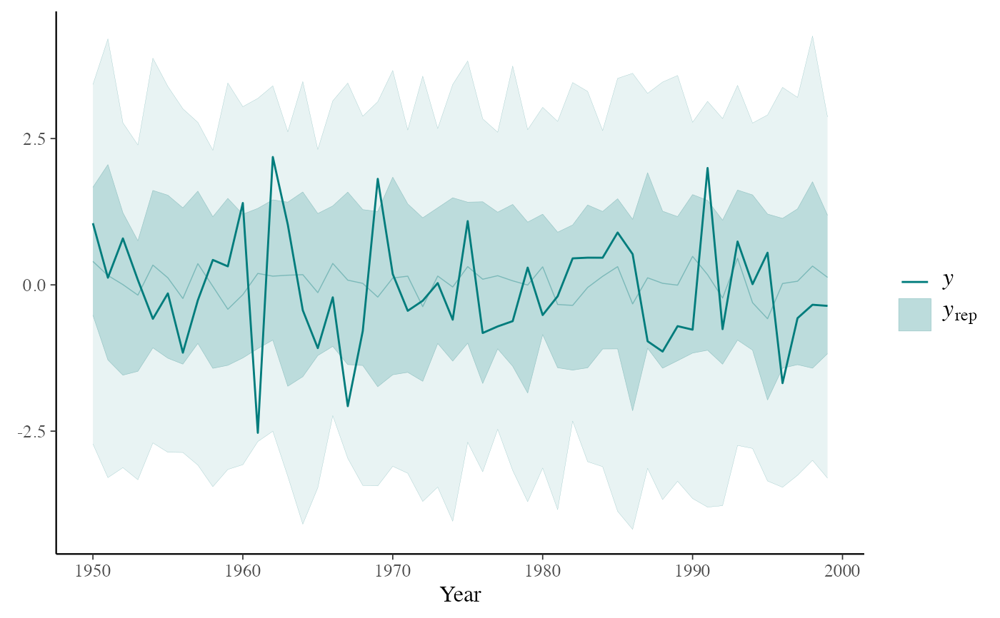
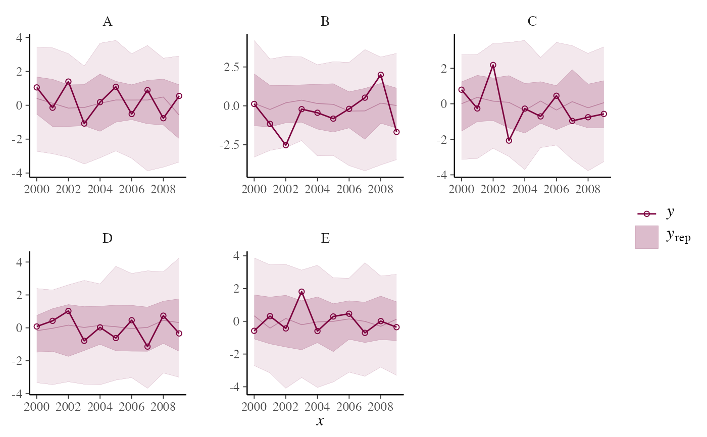
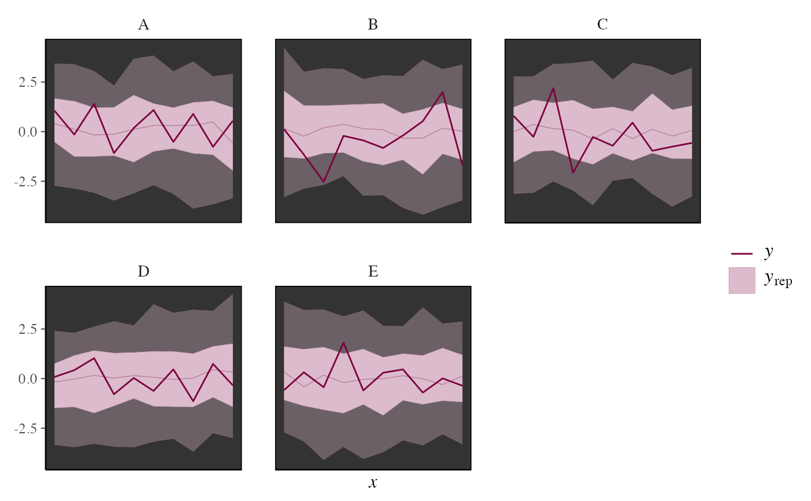

PPC intervals
PPC-intervals.RdMedians and central interval estimates of yrep with y overlaid.
See the Plot Descriptions section, below.
ppc_intervals(y, yrep, x = NULL, ..., prob = 0.5, prob_outer = 0.9, size = 1, fatten = 3) ppc_intervals_grouped(y, yrep, x = NULL, group, ..., facet_args = list(), prob = 0.5, prob_outer = 0.9, size = 1, fatten = 3) ppc_ribbon(y, yrep, x = NULL, ..., prob = 0.5, prob_outer = 0.9, alpha = 0.33, size = 0.25) ppc_ribbon_grouped(y, yrep, x = NULL, group, ..., facet_args = list(), prob = 0.5, prob_outer = 0.9, alpha = 0.33, size = 0.25) ppc_intervals_data(y, yrep, x = NULL, group = NULL, ..., prob = 0.5, prob_outer = 0.9) ppc_ribbon_data(y, yrep, x = NULL, group = NULL, ..., prob = 0.5, prob_outer = 0.9)
Arguments
| y | A vector of observations. See Details. |
|---|---|
| yrep | An \(S\) by \(N\) matrix of draws from the posterior
predictive distribution, where \(S\) is the size of the posterior sample
(or subset of the posterior sample used to generate |
| x | A numeric vector the same length as |
| ... | Currently unused. |
| prob, prob_outer | Values between 0 and 1 indicating the desired
probability mass to include in the inner and outer intervals. The defaults
are |
| group | A grouping variable (a vector or factor) the same length as
|
| facet_args | An optional list of arguments (other than |
| alpha, size, fatten | Arguments passed to geoms. For ribbon plots |
Value
The plotting functions return a ggplot object that can be further
customized using the ggplot2 package. The functions with suffix
_data() return the data that would have been drawn by the plotting
function.
Plot Descriptions
ppc_intervals(), ppc_ribbon()100*prob% central intervals foryrepat eachxvalue.ppc_intervals()plots intervals as vertical bars with points indicatingyrepmedians and darker points indicating observedyvalues.ppc_ribbon()plots a ribbon of connected intervals with a line through the median ofyrepand a darker line connecting observedyvalues. In both cases an optionalxvariable can also be specified for the x-axis variable. Depending on the number of observations and the variability in the predictions at different values ofx, one or the other of these plots may be easier to read than the other.ppc_intervals_grouped(), ppc_ribbon_grouped()Same as
ppc_intervals()andppc_ribbon(), respectively, but a separate plot (facet) is generated for each level of a grouping variable.
References
Gelman, A., Carlin, J. B., Stern, H. S., Dunson, D. B., Vehtari, A., and Rubin, D. B. (2013). Bayesian Data Analysis. Chapman & Hall/CRC Press, London, third edition. (Ch. 6)
See also
Other PPCs: PPC-discrete,
PPC-distributions,
PPC-errors, PPC-loo,
PPC-overview,
PPC-scatterplots,
PPC-test-statistics
Examples
y <- rnorm(50) yrep <- matrix(rnorm(5000, 0, 2), ncol = 50) color_scheme_set("brightblue") ppc_ribbon(y, yrep)ppc_intervals(y, yrep)# change x axis to y values (instead of indices) and add x = y line ppc_intervals(y, yrep, x = y) + abline_01()color_scheme_set("teal") year <- 1950:1999 ppc_ribbon(y, yrep, x = year, alpha = 0, size = 0.75) + ggplot2::xlab("Year")color_scheme_set("pink") year <- rep(2000:2009, each = 5) group <- gl(5, 1, length = 50, labels = LETTERS[1:5]) ppc_ribbon_grouped(y, yrep, x = year, group) + ggplot2::scale_x_continuous(breaks = pretty)ppc_ribbon_grouped( y, yrep, x = year, group, facet_args = list(scales = "fixed"), alpha = 1, size = 2 ) + xaxis_text(FALSE) + xaxis_ticks(FALSE) + panel_bg(fill = "gray20")ppc_dat <- ppc_intervals_data(y, yrep, x = year, prob = 0.5) ppc_group_dat <- ppc_intervals_data(y, yrep, x = year, group = group, prob = 0.5)#> Warning: There were 1 divergent transitions after warmup. Increasing adapt_delta above 0.95 may help. See #> http://mc-stan.org/misc/warnings.html#divergent-transitions-after-warmup#> Warning: Examine the pairs() plot to diagnose sampling problemsyrep <- posterior_predict(fit) color_scheme_set("purple") with(mtcars, ppc_intervals(mpg, yrep, x = wt, prob = 0.5)) + panel_bg(fill="gray90", color = NA) + grid_lines(color = "white")ppc_intervals_grouped(y = mtcars$mpg, yrep, prob = 0.8, x = mtcars$wt, group = mtcars$cyl)color_scheme_set("gray") ppc_intervals(mtcars$mpg, yrep, prob = 0.5) + ggplot2::scale_x_continuous( labels = rownames(mtcars), breaks = 1:nrow(mtcars) ) + xaxis_text(angle = -70, vjust = 1, hjust = 0)